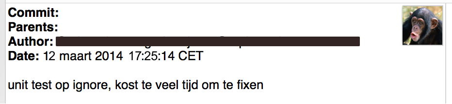

Unit-tests
Praktische do's
Dries Schulten
We kennen het allemaal...

Wachten...


Quick fix!

Problematische tests
De 'integratie'-unit-test
public class FacturatieServiceTest extends AbstractSpringHibernateTest {
@Autowired
private FacturatieService service;
@Test
public void testFactureer() {
Dossier dossier = super.getTestObject(Dossier.class);
FacturatieStatus status = service.factureer(dossier);
assertEquals(Status.IN_BEHANDELING, status.getStatus());
gassertNotNull(status.getId());
}
}
Hoe dan wel?
Simpel voorbeeld
@Test
public void testHeeftToegangMetGeldigeHash() {
SecurityService service = new SecurityServiceImpl();
String geldigeHash = maakGeldigeHash();
assertEquals(200, service.controleerHash(geldigeHash));
}
Mocken van dependencies met Mockito
@Test
public void testStartFacturatieMetDossier() {
FacturatieDao dao = Mockito.mock(FacturatieDao.class);
FacturatieService service = new FacturatieServiceImpl(dao);
Dossier dossier = new Dossier();
FacturatieStatus status = service.factureer(dossier);
assertEquals(Status.IN_BEHANDELING, status.getStatus());
Mockito.verify(dao).saveOrUpdate(status);
}
Specificeren van gedrag met Mockito
@Test
public void testAdresOpzoekenMetOngeldigePostcode() {
PostcodeWebService ws = mock(PostcodeWebService.class);
PostcodeService service = new PostcodeServiceImpl(ws);
String postcode = "123456";
when(ws.getAdres(postcode)).thenThrow(new WebException(400));
Optional<Adres> adres = service.getAdres(postcode);
assertFalse(adres.isPresent());
}
Return waarden specificeren met Mockito
@Test
public void testAdresOpzoekenMetGeldigePostcode() {
PostcodeWebService ws = mock(PostcodeWebService.class);
PostcodeService service = new PostcodeServiceImpl(ws);
String postcode = "7417ZR";
Adres testAdres = new Adres("Keizerstraat", 20);
when(ws.getAdres(postcode)).thenReturn(testAdres);
Optional<Adres> adres = service.getAdres(postcode);
assertTrue(adres.isPresent());
assertEquals(testAdres, adres.get());
}
Wicket
Hoe te testen met een unit-test?
Wicket injector
public class PatientPanel extends Panel {
/* Op fields met @SpringBean of @Inject annotaties */
@SpringBean
private AdresService adresService;
public PatientPanel(String id, IModel<Patient> model) {
super(id, model);
Adres adres = adresService.getAdres(getModelObject());
addAdresInfo(adres);
}
}
Een Mockito injector
public class PatientPanelTest {
@Mock
private AdresService adresService;
private WicketTester wicketTester;
@Before
public void setup() {
Application app = new MockApplication();
app.getComponentInstantiationListeners().add(
new MockitoMockInjector(app, adresService));
wicketTester = new WicketTester(app);
}
@Test
public void testRenderAdresVanPatientMetGeldigAdres() {
/* setup, uitvoer en asserts */
}
}
Hoe om te gaan met (systeem) resources
HL7 bericht versturen met bijlage
public class MdmVerzendServiceImpl implements MdmVerzendService {
@Autowired
private Hl7Verzender verzender;
public void verzendMdmVoorDocument(Document document) {
Mdm mdm = new Mdm();
mdm.setStatus(bepaalStatus(document));
mdm.setVerzender(bepaalVerzender(document));
mdm.setOntvanger(bepaalOntvanger(document))
/* ... */
mdm.setData(laadDocumentDataAlsBase64(document));
verzender.verzend(mdm);
}
private String laadDocumentDataAlsBase64(Document document) {
/* Document van schijf halen en converteren met exception handling enz... */
}
}
Oplossing toch?
public void testVerzendMdmMetOntvanger() {
File testDocument = new File(getClass.getResource("/test_document.pdf").toURI());
final String ontvangerCode = "0956124";
Document document = new Document("Overdracht");
document.setOnvangerCode(ontvangerCode);
document.setBestandsLocatie(testDocument.getAbsolutePath());
mdmVerzendService.verzendMdmVoorDocument(document);
ArgumentCaptor<Hl7Message> argument = ArgumentCaptor.forClass(Hl7Message.class);
verify(verzender).verzend(argument.capture());
assertEquals(ontvangerCode, argument.getValue().getReceiverCode());
}
De betere oplossing (1)
public interface DocumentIO {
String laadDocumentDataAlsBase64(Document document);
}
public class MdmVerzendServiceImpl implements MdmVerzendService {
@Autowired
private DocumentIO documentIO;
@Autowired
private Hl7Verzender verzender;
public void verzendMdmVoorDocument(Document document) {
Mdm mdm = new Mdm();
mdm.setStatus(bepaalStatus(document));
mdm.setVerzender(bepaalVerzender(document));
mdm.setOntvanger(bepaalOntvanger(document))
/* ... */
mdm.setData(documentIO.laadDocumentDataAlsBase64(document));
verzender.verzend(mdm);
}
}
De betere oplossing (2)
public void testVerzendMdmMetOntvanger() {
final String ontvangerCode = "0956124";
Document document = new Document("Overdracht");
document.setOnvangerCode(ontvangerCode);
when(documentIO.laadDocumentDataAlsBase64(any(Document.class)))
.thenReturn("Document inhoud");
mdmVerzendService.verzendMdmVoorDocument(document);
ArgumentCaptor<Hl7Message> argument = ArgumentCaptor.forClass(Hl7Message.class);
verify(verzender).verzend(argument.capture());
assertEquals(ontvangerCode, argument.getValue().getReceiverCode());
}